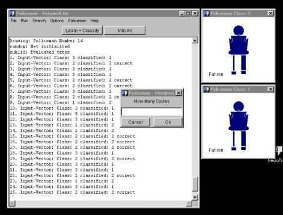

von Alexander Lüdeke
Osnabrück, 06.11.99
eine Veranstaltung von Herrn Sperrschneider
| I. Netzarchitektur
2. LVQ 2.2 LVQ2.1 2.3 LVQ3 3.2 Vorbereitung 3.3 Initialisierung 3.4 Learning Function 3.5 Learning und Training 3.6 getDistance |
4. Die
Körpersprache der Polizisten
5. Das Training 6. Interpretation der Ergebnisse 7. verbessertes LVQ 8. Ausblick 9. Bugs 10. Literatur 11. Download |
1. Netzarchitektur3.6 getDistanceDie Aufgabe bestand darin primitive Vektorgrafiken mit Hilfe eines Netzes zu klassifizieren. Als Lernverfahren wurde deshalb LVQ gewählt. Nach Zell, S. 171, versteht man unter LVQ (klassisch): Learning vector quantization. Einschichtiges neuronales Netz, d.h. Netz mit einer Schicht aktiver Neuronen, den Kohonen-Neuronen, (evtl. mit vorgeschalteten Eingabeneuronen ohne Informationsverarbeitung). Ihre Gewichte werden durch ein einfaches Lernverfahren bestimmt, welches nur die Eingabe sowie die Klasseninformation nutzt. LVQ ist ein überwachtes Lernverfahren, bei dem - im Gegensatz zu den selbstorganisierenden Karten (self organizing maps) - zu jedem Eingabevektor bekannt sein muß, zu welcher Klasse (Kategorie) er gehört. Bei der lernenden Vektorquantisierung gibt es eine (ungeordnete) Menge von sog. Codebook-Vektoren (Vektoren mit freien Parametern, Referenzvektoren), die so im Eingaberaum (der Raum der Eingabevektoren X1, X2, ... ,Xp) verteilt werden sollen, daß sie ihn möglichst gut abdecken. Es kann mehrere Codebook-Vektoren für jede Klasse von Eingabevektoren geben. Ein neuer oder bereits trainierter Eingabevektor wird parallel mit allen Referenzvektoren verglichen und derjenige Vektor, der ihm am ähnlichsten ist, gibt seine Klasse an. In unserer eingeführten Notation ist ein Codebook-Vektor (von Kohonen mit mj bezeichnet) nichts anderes als der Gewichtsvektor Wj = (w1j, ... , wnj)eines Kohonen-Neurons j, das von den n Eingabeneuronen seine Eingabe erhält.
2. LVQ Abbildung: Netzstruktur der lernenden Vektorquantisierung. Jedes Neuron der Eingabeschicht ist vollständig mit jedem Neuron der LVQ-Schicht verbunden. Wjist der Gewichtsvektor vom Kohonen-Neuron j.
2.1 LVQ1Es gibt mehrere Varianten der LVQ, z.B. LVQ1 wie es Zell in seinem Buch vorstellt: Der Eingabevektor X wird parallel mit den Codebook-Vektoren (Gewichts-Vektoren) W1, W2, ... , Wm verglichen. Das Neuron c, dessen Gewichtsvektor Wc zu dem Eingabevektor X am ähnlichsten ist, ist der Gewinner. Diese Ähnlichkeit (nächster Nachbar) wird durch eine Norm || || realisiert. Häufig minimiert man die euklidische L2-Norm der Vektordifferenz X-Wj oder maximiert das Skalarprodukt <X|Wj>. Formal lautet dies
.
Bei Verwendung des Skalarprodukts als Ähnlichkeitsmaß sieht man, daß alle Neuronen j die gewichtete Summe als Netzeingabe netj berechnen, nämlich
.
Die Werte für Gewichtsvektoren Wj, die den Klassifikationsfehler minimieren, können als asymptotische Werte des LVQ1-Lernverfahrens wie folgt gefunden werden:
Der Gewichtsvektor Wc des Gewinnerneurons c, das dem Eingabevektor am ähnlichsten ist, wird dem Eingabevektor noch ähnlicher gemacht, wenn c der gleichen Klasse wie der Eingabevektor angehört, sonst unähnlicher. Dies geschieht durch Addition bzw. Subtraktion eines variablen Bruchteils a des Differenzenvektors X(t)-Wc(t). Alle übrigen Neuronen Wj bleiben unverändert.
falls

Bei diesem Verfahren ist 0<a(t)<1 und a(t) kann konstant oder mit t monoton fallen (oft linear mit a(0)=0.1).
Abbildung:
2.2 LVQ2.1 Adaption des nächsten Gewichtsvektors Wc(t) zum Eingabevektor X(t). Hier sind die Eingabevektoren als kleine Kreise, die Gewichtsvektoren als Pfeile dargestellt. Weiterhin ist Klasse(X) = Klasse(Wc). Bei dem Verfahren LVQ2.1 ist die Klassifikation der Eingabe identisch wie bei LVQ1, nur die Modifikation der Gewichtsvektoren beim Lernen ist anders. LVQ2.1 sucht den nächsten Gewichtsvektor Wi und den übernächsten Wj. Es findet nur eine Gewichtsadaption statt, wenn folgende Voraussetzungen erfüllt sind:
- Die Klasse der beiden Gewichtsvektoren sind unterschiedlich.
- X gehört einer der beiden Klassen von Wi und Wj an.
- X liegt in einem "Fenster" entlang der Mittelsenkrechte zwischen beiden Klassen.
3. Implementierung Sind die Voraussetzungen erfüllt, so werden beide Gewichtsvektoren entsprechend verändert: Der Vektor, dessen Klasse mit der von X übereinstimmt, wird in Richtung des Eingabevektors verschoben, der nächste Vektor, dessen Klasse nicht mit der von X übereinstimmt, wird von X weggeschoben. Dadurch dreht sich die durch Mittelsenkrechte der Verbindungslinie gebildete Klassengrenze. LVQ3 versucht folgendes Problem zu lösen: Das Lernverfahren von LVQ2.1 verzerrt sehr stark die Dichte der Vektoren, so daß die Verteilung der Codebook-Vektoren nicht mehr die Dichte der Eingabevektoren wiederspiegelt.
3.1 Model-View-Controler Dieses Konzept zielt darauf, grafische und algorithmische Elemente in einem System beliebig verknüpfen und wiederverwenden zu können. Eine Trennung der Funktionalität soll Übersichtlichkeit sichern. Im Hintergrund stehen die klassischen Begriffe3.2 VorbereitungModel
ein wiederverwendbarer Algorithmus, also zum Beispiel das Netz und der Lern-Algorithmus.
View
wiederverwendbare Schnittstellen zum Benutzer, also zum Beispiel die Fenster und Dialoge.
Controller
die nötige Logik, um alles zu verbinden.Für die Implementierung in Java heißt das: Den grafischen Objekten wird ein sogenannter Listener mit addActionListener()zugewiesen. Wenn nun ein Menü oder Button (View) gedrückt wird, leitet der ActionListener ein ActionEvent an den Controller weiter, der die Methode actionPerformed implementiert hat. Diese Methode ruft dann im Model eine weitere Methode auf.
Hier eine Übersicht der verwendeten Klassen:
Die View, also die Benutzeroberfläche, sah dann so aus:

Ich erzeuge eine Datei Trees.tre mit k Pattern für das spätere Training. Jede Zeile enthält
- die Anzahl der Eingabevektoren inputCount.
- einen linearisierten Baum (Polizisten), dieser Vektor kann auf Wunsch normiert werden, d.h. seine Länge beträgt dann1. Es erscheint sinnvoll die Normierung auch "abschalten" zu können, da laut Snns, S. 138, unerwünschtes Verhalten zumindest bei DLVQ auftreten kann.
- die Klasse des Vektors.
- Dies Datei wird mit Hilfe des Programms erzeugt.
3.3 Initialisierung
- Klasse Net: Ich instanziere mit dem Constructor net()ein Objekt das als Netz fungieren soll, dieses Objekt verkapselt:
- Fest: die Dimension der Eingabevektoren inputDimension und damit die Anzahl der Eingabeneuronen
- Fest: die Anzahl der Klassen, d.h. der Codebook-Vektoren, classCount.
- Variable: Die Codebook-Vektoren codebookVec[] Wj. Letzte Komponente ist der Name der Klasse, die er repräsentiert.
- Die Klasse net wird über folgende Methoden verfügen:
- getInputDimension
- getClassCount
- getCodebook(j). Alle Komponenten des Vektors, ohne die letzte.
- getCodebookClass(j). Letzte Komponente des Vektors.
- Learn wendet die unter learningFct abgelegt Lernfunktion auf die das Objekt net an.
Es gibt zwei Initialisierungsmethoden:
- random-input: Ich wähle zufällig aus Tree.txt soviele Zeilen unterschiedlicher Klassen aus, daß ich für jede Klasse ein "Beispiel" habe und initialisiere mit diesen Eingabevektoren die Codebook-Vektoren.
- Random: Initialisierung zufällig durch Input-Vektoren, wobei nicht jede Klassen vertreten sein muß. Folge: Die Codebook-Vektoren können eine Klasse entstammen, der sie nicht angehöhren.
- Klasse Trees: Ich instanziere mit dem Constructor Trees()ein Objekt, das die inputDimension, die Anzahl der Trainingsmuster treesCount und die Trees inputVec[] selbst enthält.
- Klasse Training: In dem Objekt dieser Klasse werden die Anzahl der Trainings-Zyklen Cycles, die Lernrate factor, der Name der Trainingsfunktion learningFunc und der Distanzfunktion distance. Weiter werden hier Zwischenergebnisse des Trainings als viewValues abgelegt.
- Klasse Policeman: Hier befindet sich das Hauptprogramm, das eigentlich nur View erzeugt.
3.4 Learning Function 3.5 Learn und TrainingIch habe als Lernfunktion eine Kombination aus Hyperbel- und Wurzelfunktion implementiert. a bezeichnet den Startwert und step den Schritt, d.h in welchem Zyklus wir uns befinden.

Es hat sich als günstig erwiesen, bei normierten Vektoren 0.1 zu wählen bzw. den Quotient aus 0.1 und Länge der Input-Vektoren.
Dies ist die Methode training der Klasse Training. Es wird cyles-oft das Netz durch die Input-Vektoren trainiert:
static Net training(Net net,Trees trees,Training training)
{
int treesCount = trees.getTreesCount(); //Anzahl der Training-Patterns
int jCode = 0; //Zaehlvariable
int iInput = 0; //Zaehlvariable
int step = 1; //Zaehlvariable
double factor = getTrainingsFactor(training);while(step<getCycles(training)/trees.treesCount+1) { //Speicherplatz fuer die Zwischen- //ergebnisse und richtig bzw. falsch
training.viewValues = newdouble[net.codebookCount*2+1][training.cycles+1]; //Schleife-Input-Vektoren //bzw. cycles
for(int inStep=1;inStep<trees.getTreesCount()+1;inStep++) { iInput = inStep;
net = Net.normalizeCodebook(net,getDistance(training));
jCode = Net.nextCodebookVec(net,trees,iInput,getDistance(training));
net = learn(net,trees,training,jCode,iInput,factor,step);
}
step++;
}
net = Net.normalizeCodebook(net,getDistance(training));
return net;
}Nun die Methode learn der Klasse Training. Hier werden die Gleichungen aus 2.1 implementiert.
static Net learn(Net net,Trees trees,Training training,int jCode,
{ int iInput,double factor,int step)
int iClass = 0; //Zaehlvariablen
int iReal = 0;
boolean correct = false;
double newValue = 0.0;
//Der i-te Input-Vektor wird vom Netz
//klassifiziert.
iClass = Net.classify(net,trees,iInput,getDistance(training));
//Tatsaechlich gehoert der i-te Input-Vektor
//der Klasse ... an
iReal = Trees.getInputClass(iInput,trees);
//Input-Vektor richtig klassifiziert
//vom Netz?
if(iClass==iReal)
correct = true;
else
correct = false; //Distanzen und Klassifizierung merken
int jCod = 0;
for(int cInd=1;cInd<net.codebookCount*2+1;cInd++) {
jCod++;
training.viewValues[cInd][iInput+(step-1)*trees.treesCount] =if(jCod==iClass) { Net.getDistance(net,jCod,trees,iInput,training.distance);
cInd++;
training.viewValues[cInd][iInput+(step-1)*trees.treesCount] = 1.0;
}
else {
cInd++;
training.viewValues[cInd][iInput+(step-1)*trees.treesCount] = 2.0;
}
} //Wurde richtig klassifiziert
//dann findet eine Verstaerkung
//(Addition)
if(correct)
{
for(int m=1;m<net.getInputDimension()+1;m++) { //Schleife-Komponenten
if(("linear".compareTo(getTrainingFunc(training)))==0) {
newValue = net.getCodebookVec(jCode,m)
+ factor * Math.sqrt(1.0/step) *
(trees.getInputVec(m,iInput,trees) + net.getCodebookVec(jCode,m));
net.setCodebookVec(jCode,m,newValue);
}
if(("log".compareTo(getTrainingFunc(training)))==0) {
newValue = net.getCodebookVec(jCode,m)+ factor * 1.0/Math.log(step+Math.E) *
(trees.getInputVec(m,iInput,trees) + net.getCodebookVec(jCode,m));
net.setCodebookVec(jCode,m,newValue);
}
}
}
else //falsch klassifiziert: Abschwaechung.{ //(Subtraktion)
for(int m=1;m<net.getInputDimension()+1;m++) {if(("linear".compareTo(getTrainingFunc(training)))==0) { //Schleife-Komponenten
newValue = net.getCodebookVec(jCode,m)
– factor * Math.sqrt(1.0/step) *
(trees.getInputVec(m,iInput,trees) -
net.getCodebookVec(jCode,m));net.setCodebookVec(jCode,m,newValue);}
if(("log".compareTo(getTrainingFunc(training)))==0) {
newValue = net.getCodebookVec(jCode,m) - factor * 1.0/Math.log(step+Math.E) *
(trees.getInputVec(m,iInput,trees) – net.getCodebookVec(jCode,m));
net.setCodebookVec(jCode,m,newValue);
}
}
}
return net;
}
Die Methode getDistance berechnet nach der Euklidische Norm den Abstand von j-tem Codebook-
und i-tem Input-Vektor.static double getDistance(Net net,int indexC,Trees trees,int indexI,String distanceFunc) distance+=Math.pow(trees.getInputVec(m,indexI,trees)-
{
double distance = 0.0;
//euklidische Norm
if(("euklid".compareTo(distanceFunc))==0) {
for(int m=1;m<net.getInputDimension()+1;m++)
//Schleife-Komponenten
net.getCodebookVec(indexC,m),2);
return Math.sqrt(distance);
}
//bei Fehler -1
return distance = -1.0;
}
4. Die Körpersprache der Polizisten
Die Aufgabe bestand darin, die Zeichen eines Verkehrspolizisten, von dem ich primitive Vektorgrafiken erzeugt habe, richtig zu klassifizieren. Es gab drei verschiedene Haltungen (Klassen): Fahren, Halt und Achtung.
In der Vektorgrafik wurde nicht die Position der Körperteile beschrieben, insofern handelt es sich um eine baumartige Strucktur. Auch ihre Form wurde nicht kodiert, sondern nur ihre Größe, also die Breite und Höhe. Intern lag der Polizist als flachgeklopfter Baum, als Vektor vor.Kodierung eines Policeman:
Zum trainieren des Netzes habe ich zu Anfang nur zwei-dimensionale Vektoren verwendet, um die Funktion zu prüfen:
Beispiel1:
Inhalt der DateienBeispiel1.net: 2
2
random
Beispiel1.tre: 2
41,0,1
0,1,2
0.51,0.5,2
0.5,0.51,1Ausgabe des ProgrammesNet "Beispiel1.net" loaded
Input-Dimension = 2
Number of trees = 4
Trees "Beispiel1.tre" loaded
1. Input-Vector: (1.0, 0.0) Class: 1
2. Input-Vector: (0.0, 1.0) Class: 2
3. Input-Vector: (0.51, 0.5) Class: 1
4. Input-Vector: (0.5, 0.51) Class: 2
random-input: Net initialized
Fuer die Initalisierung wurde der 1. und der 2. Input-Vektor verwendet:
1. Codebook-Vector: (1.0, 0.0) Class: 1
2. Codebook-Vector: (0.5, 0.51) Class: 2
Bis jetzt werden nur 3 von 4 Input-Vektoren richtig klassifiziert:
1. Input-Vector: Class: 1 classified: 1 correct
2. Input-Vector: Class: 2 classified: 2 correct
3. Input-Vector: Class: 1 classified: 2
4. Input-Vector: Class: 2 classified: 2 correct
Nach 200 Zyklen mit Lernrate = 0.1 ist auch der 3. Vektor richtig klassifiziert:
1. Input-Vector: Class: 1 classified: 1 correct
2. Input-Vector: Class: 2 classified: 2 correct
3. Input-Vector: Class: 1 classified: 1 correct
4. Input-Vector: Class: 2 classified: 2 correct
Beim Lernen veränderte sich der Abstand von Input-Vektor 3 und 1. Codebook-Vektor (1.Spalte)
und 2. Codebook-Vektor (2.Spalte) so:
ViewValues: Distance between Input-Vector 3 and Codebook-Vectors
0.7000714249274855 0.6338171305833717 < //der 2. Codebook-Vektor
0.7000714249274855 0.6407683907636406 < //wird vom 3. Input-Vektor
0.7000714249274855 0.6457558357495242 < //weggedreht, da falsch
0.7000714249274855 0.6497537890779962 < //klassifiziert. Also er-
0.7000714249274855 0.6531227561983093 < //hoeht sich der Abstand
0.7000714249274855 0.6560468877185449 <
0.7000714249274855 0.6586358018382917 <
0.7000714249274855 0.6609610903773521 <
0.7000714249274855 0.6630725578777958 <
0.7000714249274855 0.6650064870577748 <
0.7000714249274855 0.6667902593737326 <
0.7000714249274855 0.6684451243580706 <
0.7000714249274855 0.6699879516460552 <
0.7000714249274855 0.6714323884857542 <
0.7000714249274855 0.6727896521668658 <
0.7000714249274855 0.6740690889132834 <
0.7000714249274855 0.6752785781710011 <
0.7000714249274855 0.6764248315052654 <
...
0.7000714249274855 0.6939312063713374 <
0.7000714249274855 0.6943761219961563 <
0.7000714249274855 0.6948092385507889 <
0.7000714249274855 0.6952310455651354 <
0.7000714249274855 0.6956420037381231 <
0.7000714249274855 0.696042547160374 <
0.7000714249274855 0.6964330853251688 <
0.7000714249274855 0.6968140049516366 <
0.7000714249274855 0.6971856716409731 <
0.7000714249274855 0.6975484313838434 <
0.7000714249274855 0.6979026119348369 <
0.7000714249274855 0.6982485240679032 <
0.7000714249274855 0.6985864627250017 <
0.7000714249274855 0.6989167080687584 <
0.7000714249274855 0.6992395264486525 <
0.7000714249274855 0.6995551712891769 <
0.7000714249274855 0.6998638839074548 <
0.7000714249274855 < 0.7001658942669701 //Jetzt wird der 3. Vektor
0.6956058934845069 < 0.6959666912566901 //richtig klassifiziert,
0.6912599529755278 < 0.6918804075920574 //also wird der Abstand
0.6870295250130419 < 0.6879031457282474 //zum 1. Codebook-Vektor
0.6829106999922183 < 0.6840311729731646 //erhoeht.
0.6788997289477188 < 0.6802609132613473
0.6749930158533615 < 0.6765889393980195
0.6711871103383453 < 0.6730119657432457
0.6674787007953897 < 0.6695268413082421
0.6638646078576836 < 0.6661305432378462
0.660341778222981 < 0.662820170654946
0.6569072788045281 < 0.6595929388443365
0.6535582911897772 < 0.6564461737550059
0.6502921063890249 < 0.6533773068012926
0.6471061198572242 < 0.6503838699446669
0.6439978267732573 < 0.6474634910391239
0.6409648175619274 < 0.6446138894243081
0.6380047736448408 < 0.6418328717515449
0.6351154634071972 < 0.6391183280289349
...
0.5162573858614609 < 0.527291817782644
0.5157879739185964 < 0.5268486949713203
0.5153255617401123 < 0.5264121597234244
0.5148700211658463 < 0.5259820918180963
0.5144212268644456 < 0.5255583736810165
0.5139790562597037 < 0.5251408903155718
0.5135433894591137 < 0.5247295292360962
0.5131141091845584 < 0.5243241804031098
0.5126911007050697 < 0.5239247361604926
0.5122742517715848 < 0.5235310911745233
0.5118634525536317 < 0.5231431423747244
0.5114585955778812 < 0.522760788896448
0.5110595756685004 < 0.5223839320251501
0.5106662898892504 < 0.5220124751422904
0.5102786374872691 < 0.5216463236728097
0.5098965198384828 < 0.5212853850341278
0.5095198403945955 < 0.5209295685866153
0.5091485046316004 < 0.5205787855854894
0.5087824199997696 < 0.5202329491340872
0.5084214958750664 < 0.5198919741384719
0.5080656435119424 < 0.5195557772633285
0.5077147759974683 < 0.5192242768891088
0.5073688082067589 < 0.5188973930703821
0.5070276567596506 < 0.518575047495357
0.5066912399785899 < 0.5182571634465345
0.5063594778476961 < 0.5179436657624577
0.506032291972961 < 0.5176344808005204 //Die 200 Zyklen wurden durchlaufen.Die Codebook-Vektoren wurden folgendermaßen initialisiert:
Also wird Input-Vektor 3 falsch klassifiziert, weil er näher zu W2 als zu W1 ist. Nach den 200 Zyklen sind die Codebook-Vektoren:
1. Codebook-Vector: (0.961448365116033, 0.27498552910236457) Class: 1
2. Codebook-Vector: (0.27757270902240677, 0.9607046326556162) Class: 2
Die vier Input-Vektoren sind linear trennbar, also können alle Klassen richtig klassifiziert werden.
Beispiel2:
Beispiel2.net: 2
Beispiel2.tre: 2 2
randomDie vier Input-Vektoren sind nicht linear trennbar, also können nicht alle Klassen richtig klassifiziert werden. 4
1,0,1
0,1,2
0.51,0.5,2
0.5,0.51,1Beispiel3:
Inhalt der DateienBeispiel4.net: 12Beispiel4.tre: 12 3
random6. Interpretation der Ergebnisse Training: Cycles: 100 30
25,30,35,47,13,26,19,-22,5,41,16,35,3
28,30,45,55,27,12,29,6,16,43,8,44,2
31,25,39,49,14,26,14,26,6,48,10,40,1
32,28,38,48,29,-6,21,20,11,47,5,39,2
30,26,43,49,29,7,29,1,6,35,17,41,2
35,30,39,53,4,29,14,-26,19,35,14,39,3
28,31,44,52,11,27,19,22,13,43,8,46,1
25,31,43,50,13,26,18,-23,8,37,6,50,3
34,29,39,51,22,-19,26,-14,11,39,5,42,2
26,27,35,46,4,29,2,-29,14,48,18,45,3
30,34,41,55,3,29,11,-27,7,50,17,45,3
25,30,44,55,29,6,29,4,18,35,16,37,2
35,27,45,45,5,29,18,23,6,46,16,46,1
33,31,37,52,0,29,12,27,16,37,20,36,1
26,33,40,51,5,29,20,21,13,39,14,48,1
33,33,40,49,14,26,6,-29,6,40,9,43,3
28,26,40,47,1,29,3,29,7,40,11,49,1
34,34,36,52,19,22,10,28,13,37,11,37,1
26,34,40,48,27,-12,29,-1,18,38,17,45,2
33,35,44,52,5,29,1,29,16,48,8,38,1
29,34,45,46,7,28,7,29,8,35,17,50,1
25,32,43,50,5,29,17,-24,20,48,18,36,3
33,35,39,50,14,26,18,-23,13,41,5,48,3
34,32,40,49,4,29,1,-29,7,35,9,37,3
35,30,42,55,9,28,15,25,18,50,7,38,1
26,31,43,46,29,0,22,19,7,35,5,37,2
25,26,37,51,6,29,12,27,20,35,20,41,1
30,30,36,46,15,25,20,21,18,42,17,39,1
35,32,38,53,26,-14,26,-13,15,47,8,40,2
33,31,44,45,12,27,3,-29,13,37,10,50,3Programmausgabe:Lade ich jetzt andere Polizisten, auf die das Netz also noch nicht trainiert wurde: Training: Learing Factor set: 0.01
random-input: Net initialized
Training:
Learing Function: linear
Distance Function: euklid
Learing Factor: 0.001
Number of Cycles: 100
Codebook-Vectors normalized
euklid: Evaluated trees
1. Input-Vec: Class: 3 -> 3 correct
2. Input-Vec: Class: 2 -> 2 correct
3. Input-Vec: Class: 1 -> 1 correct
4. Input-Vec: Class: 2 -> 2 correct
5. Input-Vec: Class: 2 -> 2 correct
6. Input-Vec: Class: 3 -> 3 correct
7. Input-Vec: Class: 1 -> 1 correct
8. Input-Vec: Class: 3 -> 3 correct
9. Input-Vec: Class: 2 -> 2 correct
10. Input-Vec: Class: 3 -> 3 correct
11. Input-Vec: Class: 3 -> 3 correct
12. Input-Vec: Class: 2 -> 2 correct
13. Input-Vec: Class: 1 -> 1 correct
14. Input-Vec: Class: 1 -> 1 correct
15. Input-Vec: Class: 1 -> 1 correct
16. Input-Vec: Class: 3 -> 3 correct
17. Input-Vec: Class: 1 -> 1 correct
18. Input-Vec: Class: 1 -> 1 correct
19. Input-Vec: Class: 2 -> 2 correct
20. Input-Vec: Class: 1 -> 1 correct
21. Input-Vec: Class: 1 -> 1 correct
22. Input-Vec: Class: 3 -> 3 correct
23. Input-Vec: Class: 3 -> 3 correct
24. Input-Vec: Class: 3 -> 3 correct
25. Input-Vec: Class: 1 -> 1 correct
26. Input-Vec: Class: 2 -> 2 correct
27. Input-Vec: Class: 1 -> 1 correct
28. Input-Vec: Class: 1 -> 1 correct
29. Input-Vec: Class: 2 -> 2 correct
30. Input-Vec: Class: 3 -> 3 correct
30 of 30 are correct classified (100 %)So werden
58 of 60 are correct classified (96 %)
fast alle Polizisten richtig klassifiziert.
- Wenn man als Inputfunktion "random-input" wählt, klassifiziert das Netz oft alle Muster richtig.
- Bei "random" besteht die Gefahr eine zu große Lernrate zu wählen, so daß ein Codebook-Vektor deutlich von den Input-Vektoren weggeschoben wird. Dieser Klassenvektor verhungert dann quasi, d.h. egal wieviele Zyklen oder wie hoch ich die Lernrate wähle, das Netz ist nicht mehr in der Lage, diesen Vektor zu korrigieren, weil die Lernfunktion nicht diesen Vektor, sondern den Vektor mit der geringsten Distanz zum Eingabe-Vektor verändert.. Man erkennt dies Problem daran, daß kein Muster dieser Klasse zugeordnet wird. In diesem Beispiel ist die Klasse 2 nicht vertreten.
1. Input-Vec: Class: 3 -> 3 correct
2. Input-Vec: Class: 2 -> 1
3. Input-Vec: Class: 1 -> 1 correct
4. Input-Vec: Class: 2 -> 1
5. Input-Vec: Class: 2 -> 1
6. Input-Vec: Class: 3 -> 3 correct
7. Input-Vec: Class: 1 -> 1 correct
8. Input-Vec: Class: 3 -> 3 correct
9. Input-Vec: Class: 2 -> 3
10. Input-Vec: Class: 3 -> 3 correct
11. Input-Vec: Class: 3 -> 3 correct
12. Input-Vec: Class: 2 -> 1
13. Input-Vec: Class: 1 -> 1 correct
14. Input-Vec: Class: 1 -> 1 correct
15. Input-Vec: Class: 1 -> 1 correct
16. Input-Vec: Class: 3 -> 3 correct
17. Input-Vec: Class: 1 -> 1 correct
18. Input-Vec: Class: 1 -> 1 correct
19. Input-Vec: Class: 2 -> 1
20. Input-Vec: Class: 1 -> 1 correct
21. Input-Vec: Class: 1 -> 1 correct
22. Input-Vec: Class: 3 -> 3 correct
23. Input-Vec: Class: 3 -> 3 correct
24. Input-Vec: Class: 3 -> 3 correct
25. Input-Vec: Class: 1 -> 1 correct
26. Input-Vec: Class: 2 -> 1
27. Input-Vec: Class: 1 -> 1 correct
28. Input-Vec: Class: 1 -> 1 correct
29. Input-Vec: Class: 2 -> 3
30. Input-Vec: Class: 3 -> 3 correctund dieser Codebook-Vektor fast nur negative Werte annimmt:
7. verbessertes LVQ 1. Codebook-Vec: (0.28096840079972224, 0.260074757144589, 0.3409701346050022, 0.4373355739553175, -0.024340290239564983, 0.3805130327502203, 0.04401440669953064, 0.29629848362943306, 0.12256830742972609, 0.3714993405716276, 0.1374015716825596, 0.37265026815600183) Class: 1 Um dieses zu vermeiden sollte man das Training mit einer geringen Lernrate beginnen und immerwieder neu initialisiern.2. Codebook-Vec: (-0.0587144511264643, -0.03739472879165023, -0.043038097542174, -0.1819505134351621, 0.37057988756821403, -0.7596366688171149, 0.26937454375593206, 0.003814494042416983, -0.2079803726326521, -0.15919488972514723, -0.2493209680511035, -0.2061108197379289) Class: 2
3. Codebook-Vec: (0.250001541308733, 0.28180227465814317, 0.3443105345797227, 0.4077919617945909, -0.017332796162093413, 0.42217062318227466, -8.370242573511355E-4, -0.3236656173784325, 0.08915888319921528, 0.3526916059573079, 0.1073121299407057, 0.3822270490584565) Class: 3
(trees.getInputVec(m,iInput,trees) Um das "Verhungern" eines Codebook-Vektors zu verhindern. Habe ich die Lernfunktion so verändert, daß der "echte" Klassen-Vektor eines Input-Vektors immer in Richtung des Input-Vektors verschoben wird. Ich dafür im else-Zweig der learn-Methode folgendes ergänzt: if(("linear".compareTo(getTrainingFunc(training)))==0) {for(int m=1;m<net.getInputDimension()+1;m++) {
//Schleife-Komponenten
newValue = net.getCodebookVec(iReal,m)+ factor * Math.sqrt(1.0/step) *
+net.getCodebookVec(iReal,m));
net.setCodebookVec(iReal,m,newValue);
}
if(("log".compareTo(getTrainingFunc(training)))==0) {
newValue = net.getCodebookVec(iReal,m)+ factor *
1.0/Math.log(step+Math.E) *
trees.getInputVec(m,iInput,trees)
+net.getCodebookVec(iReal,m));
net.setCodebookVec(iReal,m,newValue);
}
}9. Bugs
- Relativ problemlos könnte ein Pruning Algorithmus eingefügt werden.
10. Literatur
- Bei mehr als 25000 Zeichen im Output-Fenster steht das Programm scheinbar. Wenn mit "Search/Clear" kann das Problem gelöst werden.
11. Download
- Zell, Andreas, Simulation neuronaler Netze, Oldenbourg Verlag München Wien, 1994.
- Snns, Stuttgart Neural Network Simulator, User Manual, Version 4.1, University of Stuttgart, Report No. 6/95
Jeder kann hier das ausführbare Programme erhalten. Wer die Quelle möchte, schreibe mir bitte, weil ich gerne wissen möchte, wer an solcher Software interessiert ist. solcher Software ist.
e-mail meLast update: |
||